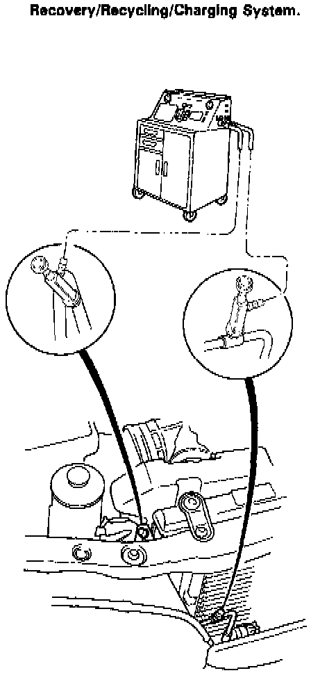
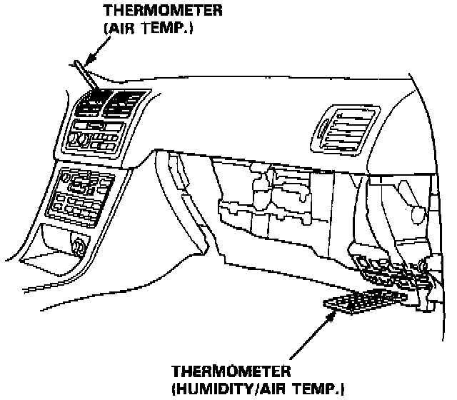
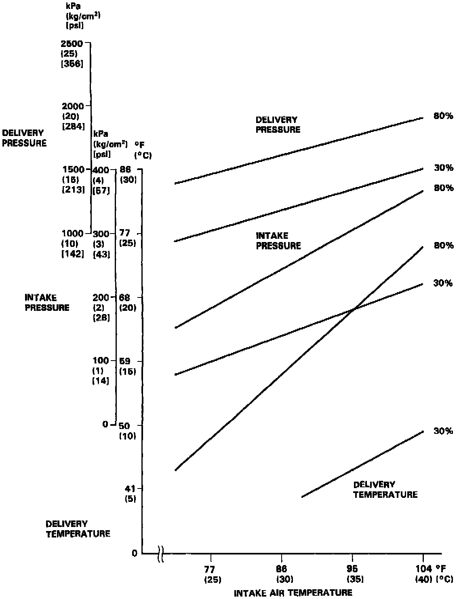

System Performance Test
The performance test will help determine if the air conditioning system is operating within specifications.Only use service equipment that is U.L.-listed and is certified to meet the requirements of SAE J2210 to remove R-134a from the air conditioning system.
CAUTION: Exposure to air conditioner refrigerant and lubricant vapor or mist can irritate eyes, nose and throat. Avoid breathing the air conditioner refrigerant and lubricant vapor or mist.
If accidental system discharge occurs, ventilate work area before resuming service.
R-134a service equipment or vehicle air conditioning system should not be pressure tested or leak tested with compressed air.
WARNING: Some mixtures of air and R-134a have been shown to be combustible at elevated pressures and can result in fire or explosion causing injury or property damage. Never use compressed air to pressure test R-134a service equipment or vehicle air conditioning systems.
Additional health and safety information may be obtained from the refrigerant and lubricant manufacturers.

1. Connect an R-134a refrigerant Recovery/Recycling/Charging System to the car as shown following the equipment manufacturer's instructions.

2. Insert a thermometer in the center vent outlet. Determine the relative humidity and air temperature by calling the local weather information line.
3. Test conditions:
- Avoid direct sunlight.
- Open hood.
- Open front doors.
- Set the temperature control dial to MAX COOL and push the mode control button to VENT and push the recirculation control button to RECIRCU.
- Turn the fan switch to MAX.
- Run the engine at 1,500 rpm.
- No driver or passengers in vehicle.
4. After running the air conditioning for 10 minutes under the above test conditions, read the delivery temperature from the thermometer in the dash vent and the high and low system pressure from the A/C gauges.

5. To complete the charts:
- Mark the delivery temperature along the vertical line.
- Mark the intake temperature (ambient air temperature) along the bottom line.
- Draw a line straight up from the air temperature to the humidity.
- Mark a point one line above and one line below the humidity level (10% above and 10% below the humidity level).
- From each point, draw a horizontal line across the delivery temperature.
- The delivery temperature should fall between the two lines.
- Complete the low side pressure test and high side pressure test in the same way.
- Any measurements outside the line may indicate the need for further inspection.